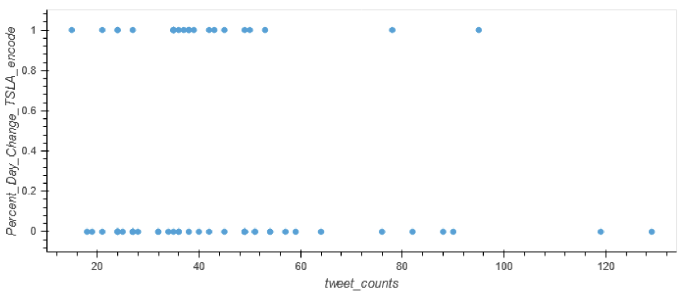

Meme Stock Price Predictions
Supervised ML Model
By: Guadalupe Salinas, JT Carter, Stone Leicar & Ricardo Saldana
Overview
Meme stocks have been gaining popularity in the last two years and have generated investors both profits and losses. The rise of social media fandom and its accompanying chatter has been named the culprit of major catapults in stocks such as GME, TSLA, AMC, and many others.
Our Project
In this project we tested whether we could predict if the price of a meme stock would increase or decrease based on the social media hype around it (conversations invoving their mention online). Specifically, we analyzed Twitter data to measure how often Tesla stock was mentioned in a 7 day period, and merged this data with the stock price counterpart on an hourly basis. As a baseline we tried to create the same results using a Stock index, the S&P500 index, in lieu of the Twitter data.
Our Initial Analysis
Logistical Regression
When comparing #TSLA tweet counts against the Percent Change of Tesla Stock, our logistical regression model yielded the following results:
- Features : SP500 % change, Tweet Count, Volume of SP500 and TSLA
- In our precision, recall, and f1-score, we were unable to determine with much certainty whether the stock would increase or decrease.
- We suspected there may be other factors affecting the prices of the stock at a greater responsibility than those that we were testing (tweet count and S&P500 % change)
Digging Deeper into Logistical Regression
- Our model did not return a good sigmoid function correlation
- There was no significant change in the decrease or increase of tesla stock at lower vs higher tweet counts.
We decided to perform additional Analyses
Assessing the impact of TSLA's volume on Percent Day Change
Further Analysis
Linear Regression Models:

The following graphs represent our linear regression models for each of the connections in the buttons above
From these visualizations, and subsequent analysis, we saw that there was a small correlation between Tesla's percent change and tweet counts with an R-squared score of 0.0058
The highest R-squared score came from the correlation between the Percent day change of the SPY index vs the Percent day change of Tesla, indicating higher impact.
Conclusion
We can conclude that the strongest correlation we found by looking at the r squared and coeffiecients is the S&P 500 having increase of price of itself and Tesla.
The limitations we initially encountered with the limited amount of both stock data and twitter data (being limited to only the past 7 days of data due to API limitations) created a big problem for our overall model and analysis.
Still, we strived to examine the correlations and create a ML model with what we had as we did not foresee ourselves coming up with a new project idea midway through our project.
Future Analysis
We would like to continue to gather data from the Twitter API and from the YFinance API in order to create a better model and have more data to go off of.